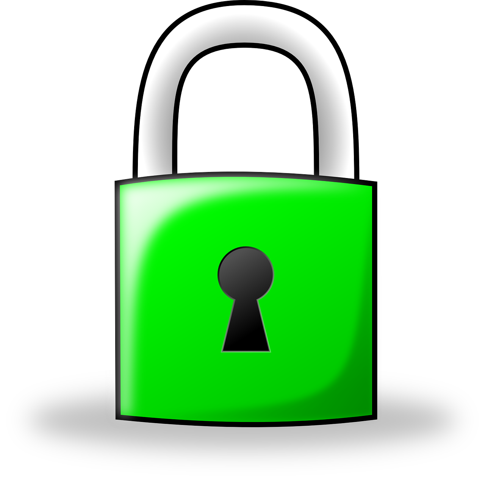

La sicurezza nel web
I pericoli del mondo digitale
Nella cyber criminalità è compreso l’uso indebito di informazioni private e personali, sottratte via Internet alle persone. In generale tutte le azioni criminali che mirano ad un uso indebito dei dati degli utenti fanno parte degli atti commessi dai cyber criminali, che costituiscono reato.
Come proteggersi
Una delle misure più efficaci è l’uso di password sicure. Anche se possono apparire lunghe, poco intuitive e difficili da ricordare, risultano molto efficaci. Però per una protezione di base completa sono indispensabili anche altri strumenti per la sicurezza informatica, che dovrebbero diventare degli standard per tutti gli utenti. Ad esempio un firewall è imprescindibile: può essere presente sul computer e/o sul router, l’importante è che venga sempre utilizzato. Infatti un firewall serve a impedire l’accesso non autorizzato sul proprio computer o sulla propria rete.
